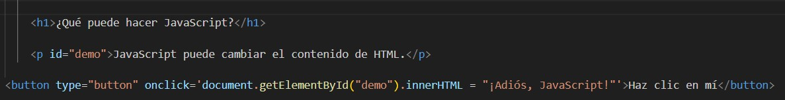

¿Qué puede hacer JavaScript?
JavaScript puede cambiar el contenido de HTML.
Código empleado:
Explicación:
Las etiquetas <h1> definen un encabezado de primer nivel que plantea la pregunta "¿Qué puede hacer JavaScript?".
<p id="demo">JavaScript puede cambiar el contenido de HTML.</p>: Define un párrafo con un id único de "demo". El uso del id permite a JavaScript identificar y seleccionar este elemento de manera única para poder manipularlo.
<button type="button" onclick='...'>Haz clic en mí</button>: Define un botón que, cuando se hace clic en él, ejecutará el código JavaScript proporcionado en el atributo onclick. El atributo type="button" indica que no es un botón de envío de formulario, sino un botón genérico.
onclick='document.getElementById("demo").innerHTML = "¡Adiós, JavaScript!"': Es un manejador de eventos que se activa cuando el usuario hace clic en el botón. La función document.getElementById("demo") selecciona el elemento HTML con el id "demo", y la propiedad innerHTML se utiliza para cambiar el contenido de ese elemento al texto "¡Adiós, JavaScript!".